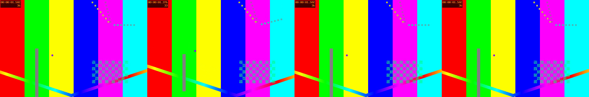
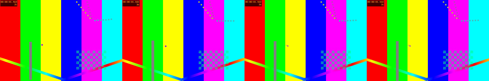

IVTC and Soft Telecine previewed a frame before the target
Outcome: fixed. With Deinterlace set to IVTC, or Soft Telecine on a 29.97 source, the preview
ran VFM but not VDecimate, while the worker chose the frame to show as if it had decimated
(local × 4/5 of an undecimated window). The preview showed the film frame of source frame
target − ceil(radius / 5): one film frame early at the minimum window radius of 5,
two at radius 8, three at radius 12. Of 135 previews across eight IVTC and Soft
Telecine cases, 22 showed what the encode shows for their source frame. A frame rate conversion
after IVTC was wrong a second way: the preview converted its undecimated 29.97 clip, at about ×2 rather than ×2.5.
The preview now runs VDecimate on a clip arranged as the encode's. Frames before the in-point are dropped, copies of the first frame put VDecimate's cycles in the encode's phase, and the clip ends where the encode's ends. The script then reads which frame of the target's cycle VDecimate dropped. After: 147 of 147 previews (including 12 frame-rate outputs) are the encode's frame for their source frame, pixel for pixel on 8-bit sources (MAD 0.00), and within the 10-bit conversion's 0.87 on ProRes. The encode is unchanged.
1. The fault
Since task #42 the encode and the preview come from one template. VDecimate sat in an
{{#ENCODE_ONLY}} block, carried over from the separate preview template, which never had it.
ProcessingPipeline::preview_output walks every pass's FrameMap forward, and IVTC's is
Decimate { cycle: 5, keep: 4 }, so the target's index in the window (local, the
window radius once past the start) became local × 4 / 5. That index then picked a frame from the
undecimated clip.
Correction to the plan. The plan said the error was 0 near the start of a source, where
local < radius. It is not: local − floor(4·local/5) is 1 for every local from 1 to 6.
The measurement shows source frame 1 previewed as film frame 0. Only frame 0 itself was right.
2. What VDecimate decides from
Running VDecimate in the preview is only right if its decisions match the encode's.
scripts/vdecimate_probe.py asks the bundled vivtc (with dryrun=True, which stamps each
frame's decision) on synthetic flat-grey clips:
1. frame 0 metric 156673 is the same for another first frame: 156673 2. frame 4 = 72: second cycle drops [6] 2. frame 4 = 86 (= frame 5): second cycle drops [5] 3. from frame 3: drops at [5, 9] (cycles 3..7 and the short 8..9) 4. kept frames carry their tag: [0, 1, 2, 4, 6, 7, 8, 9]
- A clip's first frame gets a fixed large metric instead of a difference, so it is never dropped. From frame 0, frame 3 (a copy of frame 2) is dropped; from frame 3, it is kept.
- Each frame's metric is its difference from the frame before it, so a cycle's decision reads the frame before the cycle. Changing only frame 4 moves the second cycle's drop from 6 to 5.
- Cycles count from the clip's first frame, and a short last cycle still loses a frame.
- A frame property set before VDecimate is still on the frames it keeps.
So the preview's clip must start its cycles where the encode's do, hold real frames before the target's cycle, start where the encode starts when the window reaches back past an in-point, and end where the encode ends.
3. The fix
- The window.
FrameMap::Decimatedeclares a radius ofcycle + 1. That covers the target's whole cycle, the frame before it (VDecimate's comparison) and that frame's VFM neighbour. - The walk.
preview_output_ingives a decimation its own step, beside the retime's padding (issue #129):- When the window starts before the in-point, the frames before it are dropped (
skip; for IVTC before VFM, so VFM also starts where the encode's does). pad = e0 mod cyclecopies of the first frame go in front, putting the cycles in the encode's phase.- When the encode ends inside the window, the clip is cut there (
real_len). Soft Telecine's last cycle is then filled with copies of the last frame, as the encode's pipe does (pipe_frames).
after_drop). - When the window starts before the in-point, the frames before it are dropped (
- The script.
_preview_decimate_inarranges the clip and tags each frame with its index. VDecimate runs with the same arguments as the encode's (one call, shared by both sides)._preview_decimate_outreads the tag of the frame where the target would be, printsPREVIEW_DECIMATE:corr=Nfor the worker, and the final pick takes the matching output. The worker reports that output'ssub_frame/sub_frames. - The out-point. The app now sends the out-point with a preview job (
endFrame, not a trim). Without it the worker takes the source's length (totalFrames). - Stabilize. Its pitch-file lookup in the preview starts at
first + skip − pad, which keeps the encode'soffset + n × 5/4exact, because the padded clip starts a whole number of cycles from the in-point.
4. Measurement
scripts/measure.py encodes each case losslessly (FFV1 in MKV) and previews the listed source frames,
with the worker before the fix (commit 38bac59) and after. Every fixture is testsrc2 at 24000/1001
(generate_telecine_test.sh, generate_prores422_10bit_test.sh,
generate_source_grid_test.sh), so each picture is named by the film frame it holds. The name is the
nearest film field among the film frames regenerated from lavfi, judged on luma thumbnails normalised for mean and
contrast, field by field. The source slot comes from an independent ffmpeg decode, not the worker's.
Right means the preview is one of the encode's frames (MAD < 1.5) and either holds one of
the slot's film frames, or, where the encode kept none of them, the kept frame before them. After a frame rate
conversion it must be the encode's k-th output of the slot's film frame (verdict in
measure.py). Film off counts the previews by how many film frames they missed the
slot's by.
| Case | Fixture | Window radius | Right before | Right after | Film off before → after |
|---|---|---|---|---|---|
| IVTC | hard_telecine_test.avi (8-bit, 90 slots) | 6 (5 before) | 5/24 | 24/24 | −2: 5, −1: 18, 0: 1 → 0: 24 |
| IVTC + Deflicker window 8 | same | 14 (8) | 0/10 | 10/10 | −2: 10 → 0: 10 |
| IVTC + Deflicker window 12 | same | 18 (12) | 0/10 | 10/10 | −3: 8, −2: 2 → 0: 10 |
| IVTC trimmed 23..70 | same | 6 (5) | 4/17 | 17/17 | −2: 3, −1: 14 → 0: 16, −1: 1 * |
| IVTC, 10-bit | prores422_10bit_telecine.mov (30 slots) | 6 (5) | 6/30 | 30/30 | −2: 6, −1: 23, 0: 1 → 0: 29, +1: 1 * |
| Soft Telecine | soft_telecine_dvd.vob (150 slots) | 6 (5) | 4/17 | 17/17 | −1: 13, 0: 4 → 0: 17 |
| Soft Telecine | soft_telecine_dvd.mkv | 6 (5) | 3/17 | 17/17 | −1: 14, 0: 3 → 0: 17 |
| Soft Telecine + Deflicker 8 | soft_telecine_dvd.vob | 14 (8) | 0/10 | 10/10 | −2: 6, −1: 4 → 0: 10 |
| IVTC → 59.94 (FlowFPS), every output | hard_telecine_test.avi | 7 (5) | 5/13 | 12/12 | (by output frame) |
Window radius: after the fix (before it, in brackets). The decimation now declares
cycle + 1 = 6. Before the fix the preview reported 13 outputs for the five FlowFPS targets
(three for source 41, whose film frame has two), so the totals differ. Targets: 0–6, 40–49 and 83–89 for IVTC;
40–49 at the wider radii; 23–32 and 64–70 for the trim; all 30 for ProRes; 0–6 and 60–69 for the VOB;
60–69 and 143–149 for the MKV; 40–44 for FlowFPS.
* The after rows marked * are right, and show what the encode itself does:
- Trim, source 69 (film off −1). The encode's last cycle is short (48 frames is 9 cycles and 3).
VDecimate drops a frame from it, and there it drops a real one, film frame 55, the only frame of slot 69. The
preview shows the kept frame before it, film 54, which is encode frame 36 to the pixel. The same partial-cycle loss
is what
pipe_framesavoids for Soft Telecine (issue #174). IVTC still has it in the encode; that is outside this task. - ProRes, source 0 (film off +1). The encode drops film frame 0: its first cycle has a duplicate of film 1, but VDecimate drops slot 0 instead. Its frame 0 is film 1, and the preview shows the same. The film naming on this 10-bit fixture is also less certain; previews and encode frames differ by 0.86–0.87 throughout, which is the 10-bit PNG against an 8-bit decode, not a different picture.
Pictures
Each image has four panels at half size. From left: the source slot (independent decode); the old preview; the new preview; the encode's frame. testsrc2 prints its frame number in the top-left corner, which is the film frame number. Click for full size.

36, 1.502 s). The old preview shows 33, three film frames early. The new preview
shows 36, identical to the encode's frame 36 (MAD 0.00).
What the metric can't tell you
- The source slot's film frame comes from an independent decode, plain for the hard-telecined
files and ffmpeg's
fpsfilter onto the 29.97 grid for the soft-telecined ones. It is not the worker's placement (issue #174), so a slot where the two disagree would be misjudged. That decode of the VOB holds 149 slots (its last picture has no timestamp; task #26), so the VOB's tail is checked on the MKV instead. - A hard-telecined slot can hold two film frames, one per field. Either is right, because VFM picks one and the encode keeps it. The check is that the preview is the encode's frame, not which of the two VFM chose.
- MAD compares the preview PNG with the encode decoded by ffmpeg's own YUV→RGB. 0.00 on 8-bit means the same picture. It cannot say how alike two different pictures are; only the film naming does that.
- Short synthetic fixtures with regular 3:2 cadence, one machine (Apple Silicon). VDecimate on broken cadence, scene changes or real film grain is not exercised beyond what the model test below covers.
5. Tests
a_decimation_previews_the_frame_the_encode_keeps(Rust unit). A model of VDecimate built from §2's rules, with a picture-dependent drop, runs the encode and the preview exactly as the template does:- IVTC cycles 4, 5 and 6, and Soft Telecine;
- in-points 0–7, four out-points, every target.
- no skip;
- no pad;
- no out-point cut;
- a radius of
cycle − 2.
a_retime_after_a_decimation_takes_both_outcomes,stabilize_looks_up_the_decimated_clip_from_its_encode_offset, and the radius test (Rust unit).test_251(script generation): VDecimate and the preview blocks are in place in both methods' preview scripts, the values are filled, and the encode carries none of it.test_248andtest_240were updated for VDecimate now being in both scripts.integration_ivtc_preview_test.dart(heavy): the measurement's verdict as assertions, on 82 previews over six cases. It fails all six with the worker before the fix.
6. Decisions
- Run VDecimate in the preview (option a), not treat the decimation as identity (option b). (b) would show the duplicates the encode drops. It would leave every pass after IVTC working on 29.97 frames with duplicate neighbours. And it cannot fix a frame rate conversion or Unblend after IVTC, or Stabilize's pitch lookup, whose rates come from the decimated clip.
- Read the drop in the script, not in the worker. Which frame goes depends on the picture. A
frame-index tag on the one real VDecimate call, read back at script time with
get_frame, costs one cycle of VFM on a few frames. It also keeps a single VDecimate call, so its arguments cannot drift between sides. Adryrun=Truecopy would have been a second call with its arguments copied. - The worker computes both outcomes and the script picks one, so the retime and sub-frame
arithmetic after a decimation stays in
preview_outputalone. - Send the out-point. Without it, a target in a trimmed encode's short last cycle could be decided on frames the encode never sees. Measured: source 69 of the 23..70 trim shows the encode's partial-cycle drop.
7. Not tested
- Windows and Linux (the template and walk are platform-independent; vivtc is the same release).
- Real telecined film (broken cadence, orphan fields, VFM's
micdecisions near the window edge). - IVTC with Unblend or RIFE after it (the walk handles any retime; only FlowFPS was encoded).
- Stabilize file-mode pitch after IVTC on a real file; the offset is unit-tested only.
Reproduce
cd worker && cargo build BEFORE_WORKER=<worker built at 38bac59, with that commit's templates/ beside it> \ docs/reports/issue-46-ivtc-preview/scripts/run.sh
run.sh runs vdecimate_probe.py, then measure.py with each worker, then
summary.py and images.py. Scratch files go to $IVTC_WORK_ROOT (default: a
temporary directory). It needs deps/<platform> or $VAPOURBOX_DEPS_DIR.